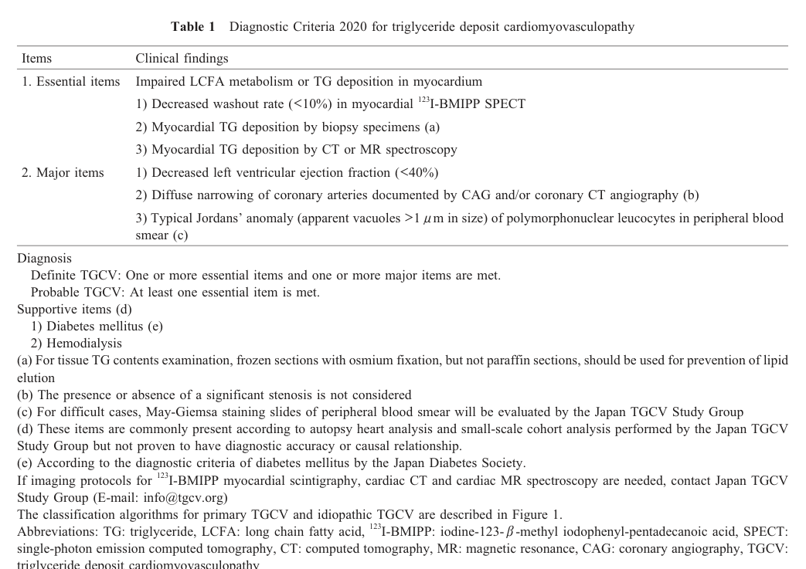

Primary Triglyceride Deposit Cardiomyovasculopathy (Primary TGCV) — Disease Characteristics Research Report
Executive summary
Primary triglyceride deposit cardiomyovasculopathy (primary TGCV; P‑TGCV) is the genetic, PNPLA2/adipose triglyceride lipase (ATGL)–deficiency form of triglyceride deposit cardiomyovasculopathy (TGCV). TGCV is characterized by defective intracellular triglyceride (TG) lipolysis leading to ectopic TG accumulation in cardiomyocytes and coronary artery vascular smooth muscle cells (VSMCs), with consequent severe heart failure (HF) and diffuse coronary artery disease (CAD) that is often refractory to conventional therapy. (kobayashi2020thediagnosticcriteria pages 1-2, kobayashi2020thediagnosticcriteria pages 2-4)
Recent (2023–2024) translational developments emphasize quantitative imaging of myocardial TG (e.g., proton MR spectroscopy) for treatment monitoring and continued clinical evaluation of tricaprin/trisdecanoin (CNT‑01) as a disease-specific metabolic/nutritional therapy. (aikawa20231hmrstoevaluate pages 3-4, aikawa20231hmrstoevaluate pages 1-3, yamamoto2024acutecoronarysyndrome pages 2-3)
1. Disease information
Overview and current understanding
TGCV is a “newly identified disease” discovered in Japanese patients requiring cardiac transplantation in 2008; “defective intracellular lipolysis causes triglyceride (TG) accumulation in the myocardium and coronary artery vascular smooth muscle cells,” causing severe HF and CAD with poor prognosis. (kobayashi2020thediagnosticcriteria pages 1-2)
TGCV is classified into: - Primary TGCV: with genetic ATGL deficiency due to PNPLA2 mutations. (kobayashi2020thediagnosticcriteria pages 2-4, li2019triglyceridedepositcardiomyovasculopathy pages 1-2) - Idiopathic TGCV: without PNPLA2 mutations but with similarly impaired myocardial lipolysis/ATGL activity. (li2019triglyceridedepositcardiomyovasculopathy pages 1-2)
Key identifiers
- Orphanet: TGCV encoded as ORPHA:565612 (as cited in the Japan TGCV Study Group diagnostic criteria paper). URL: https://www.orpha.net/consor/cgi-bin/OC_Exp.php?lng=EN&Expert=565612 (referenced in) (kobayashi2020thediagnosticcriteria pages 2-4)
- OMIM / MONDO / ICD‑10/ICD‑11 / MeSH: not extractable from the retrieved full-text corpus used in this run; therefore not asserted here.
Synonyms and alternative names
- “Triglyceride deposit cardiomyovasculopathy (TGCV)” and the conceptual label “obesity of the heart” (as an early framing of the entity). (hirano2024triglyceridedepositcardiomyovasculopathy pages 2-4)
Evidence provenance
Most available information in this run is from aggregated disease-level resources (diagnostic criteria, registry papers, observational registry protocols) plus case reports and preclinical models. (kobayashi2020thediagnosticcriteria pages 2-4, li2019triglyceridedepositcardiomyovasculopathy pages 1-2, aikawa20231hmrstoevaluate pages 3-4, suzuki2018tricaprinrescuesmyocardial pages 2-4)
2. Etiology
Disease causal factors
- Primary TGCV is caused by genetic deficiency of ATGL (encoded by PNPLA2), a “rate-limiting enzyme in the intracellular hydrolysis of TG.” (kobayashi2020thediagnosticcriteria pages 1-2)
- Mechanistic cause: impaired intracellular TG hydrolysis leads to lipotoxicity and energy failure, driving cardiomyocyte steatosis and TG‑deposit coronary atherosclerosis. (kobayashi2020thediagnosticcriteria pages 1-2)
Risk factors (clinical associations)
Registry- and cohort-based reports (Japan) highlight frequent comorbidities in diagnosed TGCV, including diabetes and hemodialysis. (kobayashi2020thediagnosticcriteria pages 2-4)
Chronic kidney disease (CKD) as a prognostic risk factor (mortality): a retrospective TGCV registry analysis reported worse survival with CKD and an age-adjusted mortality association (hazard ratio 2.33 [1.12–4.86]). (li2019triglyceridedepositcardiomyovasculopathy pages 6-7)
Protective factors
No validated genetic or environmental protective factors were identified in the retrieved corpus.
Gene–environment interactions
Not established for primary TGCV in the retrieved corpus.
3. Phenotypes
Core phenotype spectrum (human)
From registry and clinical synthesis papers: - Adult-onset heart failure and/or coronary artery disease with diffuse narrowing (concentric, multivessel). (li2019triglyceridedepositcardiomyovasculopathy pages 6-7, hirano2024triglyceridedepositcardiomyovasculopathy pages 2-4) - Ventricular arrhythmia and “critical arrhythmia” in primary TGCV. (li2019triglyceridedepositcardiomyovasculopathy pages 6-7) - Symptoms reported include chest pressure/discomfort/heaviness (often atypical), fatigue (notably during fasting/cold exposure), and high nitroglycerin requirement in some. (hirano2024triglyceridedepositcardiomyovasculopathy pages 2-4)
Primary vs idiopathic TGCV clinical contrasts (registry): - Skeletal myopathy: present in 7/7 primary TGCV vs 0/18 idiopathic TGCV in an early registry cohort. (li2019triglyceridedepositcardiomyovasculopathy pages 6-7) - Symptom onset is earlier in primary TGCV (mean 37.7±9.2 years) than idiopathic (55.9±12.5 years). (li2019triglyceridedepositcardiomyovasculopathy pages 6-7)
Phenotype onset / progression
- TGCV is typically adult onset and may progress to intractable HF; in early primary TGCV cohorts, some patients required heart transplantation. (li2019triglyceridedepositcardiomyovasculopathy pages 6-7)
Suggested HPO terms (non-exhaustive; ontology mapping suggestions)
(These are term suggestions for knowledge-base annotation; not all are explicitly enumerated in a single cited paper.) - Heart failure: HP:0001635 - Dilated cardiomyopathy-like phenotype: HP:0001644 - Coronary artery disease: HP:0001677 - Ventricular tachycardia/arrhythmia: HP:0004756 / HP:0001663 - Angina pectoris / chest pain: HP:0001681 / HP:0100749 - Skeletal myopathy: HP:0003198 - Elevated creatine kinase (often relevant in PNPLA2/NLSDM spectrum): HP:0003236 (supported conceptually by PNPLA2 cardiomyopathy literature review) (wang2024dilatedcardiomyopathycaused pages 1-2) - Jordan’s anomaly (cytoplasmic vacuoles in granulocytes; closest mapping may require custom term or annotation via “abnormal leukocyte morphology”). The clinical definition is given in diagnostic criteria. (kobayashi2020thediagnosticcriteria pages 2-4)
4. Genetic / molecular information
Causal gene(s)
- PNPLA2 (ATGL): causal for primary TGCV (homozygous deficiency reported; “10 different homozygous PNPLA2 mutations” noted in Japan’s primary TGCV cases). (hirano2024triglyceridedepositcardiomyovasculopathy pages 2-4)
Pathogenic variants and variant types (examples)
The TGCV-focused clinical review did not list explicit HGVS variants, but recent PNPLA2 cardiomyopathy literature (broader NLSDM/ATGL-deficiency spectrum) provides concrete examples: - NM_020376.4(PNPLA2):c.757+1G>T, homozygous splice-site variant reported in two males with severe dilated cardiomyopathy and mild skeletal involvement; paper supports autosomal recessive inheritance by heterozygous asymptomatic relatives. (wang2024dilatedcardiomyopathycaused pages 2-4)
Variant interpretation frameworks: The retrieved corpus did not include ClinVar/ACMG tables; variant classification should therefore be verified in ClinVar/ClinGen in downstream curation.
Modifier genes / epigenetics / chromosomal abnormalities
Not established for primary TGCV in the retrieved corpus.
5. Environmental information
Primary TGCV is Mendelian; no specific non-genetic causes were identified in the retrieved corpus. The diagnostic criteria note diabetes/hemodialysis as supportive features, but their causal contribution is “unknown.” (kobayashi2020thediagnosticcriteria pages 1-2)
6. Mechanism / pathophysiology
Causal chain (gene → cell → organ → phenotype)
A mechanistic model consistent across registry and diagnostic criteria texts is: 1) PNPLA2/ATGL deficiency → 2) impaired intracellular TG hydrolysis → 3) failure to mobilize long-chain fatty acids (LCFAs) from the cellular TG pool for mitochondrial β‑oxidation → 4) energy failure and lipotoxicity with massive TG accumulation → 5) cardiomyocyte steatosis/fibrosis and TG‑deposit coronary atherosclerosis → 6) HF, arrhythmia, diffuse CAD. (kobayashi2020thediagnosticcriteria pages 1-2, li2019triglyceridedepositcardiomyovasculopathy pages 2-4)
A distinct vascular pathology is emphasized: TGCV coronary lesions can “exclusively accumulated TG, but not cholesterol,” with TG‑laden foam cells distributed across vessel layers. (hirano2024triglyceridedepositcardiomyovasculopathy pages 2-4)
Suggested GO biological process terms (annotation suggestions)
- Triglyceride catabolic process: GO:0019433
- Lipid droplet organization: GO:0034389
- Fatty acid beta-oxidation: GO:0006635
- Mitochondrial ATP synthesis coupled electron transport: GO:0042775
- Inflammatory response (vascular): GO:0006954 (supported conceptually by pro-inflammatory vascular phenotypes in TGCV pathophysiology discussion) (li2019triglyceridedepositcardiomyovasculopathy pages 2-4)
Suggested Cell Ontology (CL) cell types (annotation suggestions)
- Cardiac muscle cell / cardiomyocyte: CL:0000746
- Vascular smooth muscle cell: CL:0000192
- Neutrophil (polymorphonuclear leukocyte; Jordan’s anomaly context): CL:0000775 (kobayashi2020thediagnosticcriteria pages 2-4)
7. Anatomical structures affected
Organ / system level (with UBERON suggestions)
- Heart / myocardium (UBERON:0000948 / UBERON:0002349) (kobayashi2020thediagnosticcriteria pages 1-2)
- Epicardial coronary arteries (UBERON:0001621) (kobayashi2020thediagnosticcriteria pages 1-2)
- Vasculature (systemic arteries with TG deposition reported in registry case material) (li2019triglyceridedepositcardiomyovasculopathy pages 2-4)
Subcellular localization (GO cellular component suggestions)
- Lipid droplet: GO:0005811
- Mitochondrion: GO:0005739
8. Temporal development
- Typical onset: adult; registry data show earlier onset in primary TGCV than idiopathic TGCV. (li2019triglyceridedepositcardiomyovasculopathy pages 6-7)
- Course: progressive, often severe; early primary TGCV cases include transplant-requiring HF. (li2019triglyceridedepositcardiomyovasculopathy pages 6-7)
9. Inheritance and population
- Inheritance (primary TGCV / PNPLA2 deficiency): autosomal recessive pattern is supported by PNPLA2 cardiomyopathy case reports with heterozygous asymptomatic family members. (wang2024dilatedcardiomyopathycaused pages 2-4)
- Population: most systematic epidemiology and clinical implementation work is Japan-centric (registry, diagnostic criteria, imaging availability). (hirano2024triglyceridedepositcardiomyovasculopathy pages 2-4)
10. Diagnostics
Diagnostic criteria (Japan TGCV Study Group, 2020)
The Diagnostic Criteria 2020 define: - Essential items include: “Decreased washout rate (<10%) in myocardial 123I‑BMIPP SPECT” or myocardial TG deposition by biopsy/CT/MR spectroscopy. (kobayashi2020thediagnosticcriteria pages 2-4, kobayashi2020thediagnosticcriteria media e5e5e74d) - Major items include: LVEF <40%, diffuse coronary narrowing on angiography/CTA, and typical Jordan’s anomaly in polymorphonuclear leukocytes. (kobayashi2020thediagnosticcriteria pages 2-4, kobayashi2020thediagnosticcriteria media e5e5e74d)
Key mechanistic imaging principle: In TGCV, BMIPP is incorporated into BMIPP‑TG, and “the hydrolysis of BMIPP‑TG to BMIPP is impaired,” yielding reduced BMIPP washout rate (WR) as an in vivo marker of defective intracellular lipolysis. (hirano2024triglyceridedepositcardiomyovasculopathy pages 2-4)
Pathology / laboratory biomarkers
- Jordan’s anomaly definition for classification into primary vs idiopathic: vacuoles >1 μm in >90% polymorphonuclear leukocytes. (kobayashi2020thediagnosticcriteria pages 2-4)
- Peripheral leukocyte ATGL activity assay: registry reports show profoundly reduced ATGL activity (primary and idiopathic, with primary lower). (li2019triglyceridedepositcardiomyovasculopathy pages 4-6)
Differential diagnosis
The Diagnostic Criteria 2020 list differential diagnoses including dilated and hypertrophic cardiomyopathies, arrhythmogenic cardiomyopathy, mitochondrial cardiomyopathy, metabolic myocardial disorders (Fabry, Pompe, Danon, mitochondrial disease, CD36 deficiency, cholesteryl ester storage disease), carnitine deficiency, diabetic cardiomyopathy, and excess epicardial fat deposition. (kobayashi2020thediagnosticcriteria pages 1-2)
Real-world diagnostic implementation (2023–2024)
- 2023 case report used 123I‑BMIPP plus 1H‑MRS to diagnose idiopathic TGCV and monitor CNT‑01 response. (aikawa20231hmrstoevaluate pages 1-3)
- 2024 ACS case report used low BMIPP WR (3.1%) plus endomyocardial biopsy to support diagnosis, with follow-up WR normalization after therapy. (yamamoto2024acutecoronarysyndrome pages 2-3)
11. Outcome / prognosis
Registry-based outcomes
A 2024 clinical synthesis reports 5‑year overall survival 71.8% and cardiovascular event-free survival 54.0% in a retrospective TGCV registry. (hirano2024triglyceridedepositcardiomyovasculopathy pages 2-4)
Risk stratification / prognostic factors
CKD was associated with worse survival: 5-year survival 61.8% in CKD vs 84.4% in non‑CKD, with hazard ratio 2.33 after age adjustment (registry analysis). (li2019triglyceridedepositcardiomyovasculopathy pages 6-7)
12. Treatment
Disease-specific therapy: tricaprin / trisdecanoin (CNT‑01)
TGCV-specific therapy development described in 2020 criteria includes CNT‑01 (tricaprin) investigator-initiated trials and designation under Japan’s SAKIGAKE system (June 2020). (kobayashi2020thediagnosticcriteria pages 1-2)
Direct abstract quote (2023, treatment rationale): “The MCFAs are readily oxidized by cells, including cardiomyocytes, as a very efficient source of energy production.” (aikawa20231hmrstoevaluate pages 4-5)
Preclinical evidence (model organism)
In ATGL knockout mice (TGCV model), dietary tricaprin improved imaging and function: - Myocardial CT value improved from −27.5±5.7 HU to 8.1±5.5 HU (p<0.01). (suzuki2018tricaprinrescuesmyocardial pages 2-4) - LVEF improved from 15±9% to 30±12% (p<0.01). (suzuki2018tricaprinrescuesmyocardial pages 2-4)
Clinical trial evidence
- Phase IIa randomized, double-blind exploratory trial (UMIN000035403; published 2022): 17 idiopathic TGCV patients, CNT‑01 1.5 g/day vs placebo for 8 weeks; delta BMIPP-WR improved in CNT‑01 vs placebo (baseline-adjusted p=0.035). URL: https://doi.org/10.17996/anc.22-00167 (miyauchi2022<sup>123<sup>ibmippscintigraphyshows pages 1-2)
2023–2024 clinical implementations
- 2023 case report (Endocrinology, Diabetes & Metabolism Case Reports; Apr 2023): After 8 weeks CNT‑01 1.5 g/day, BMIPP WR increased 5.1%→13.3% and myocardial TG content by 1H‑MRS decreased 8.4%→5.9%, without adverse effects. URL: https://doi.org/10.1530/edm-22-0370 (aikawa20231hmrstoevaluate pages 3-4, aikawa20231hmrstoevaluate pages 1-3)
- 2024 ACS case report (CJC Open; Sep 2024): Baseline BMIPP WR 3.1% (cutoff <10%); after CABG plus tricaprin, BMIPP WR improved to 21.5% with imaging evidence of regression/dilatation of diffuse coronary stenoses and extracellular volume reduction (41%→36%) at 1.5 years. URL: https://doi.org/10.1016/j.cjco.2024.06.004 (yamamoto2024acutecoronarysyndrome pages 2-3, yamamoto2024acutecoronarysyndrome pages 3-5)
Conventional CAD/HF interventions
Registry data reflect frequent need for revascularization (PCI/CABG) and occasional transplant in severe primary TGCV. (li2019triglyceridedepositcardiomyovasculopathy pages 6-7)
Ongoing/registered clinical trials and registries (ClinicalTrials.gov)
- NCT02502578: Phase I/II safety study of CNT‑01 in idiopathic TGCV (completed; small enrollment reported in the clinical-trials metadata). (kobayashi2020thediagnosticcriteria pages 2-4)
- NCT05345223: Completed Japan registry (retrospective cohort), enrollment 193, start 2022‑03‑31, completion 2023‑12‑31; includes pre/post tricaprin comparisons for BMIPP WR, LVEF, and cardiovascular events. URL: https://clinicaltrials.gov/study/NCT05345223 (NCT05345223 chunk 1)
- NCT02918032: Recruiting international registry for NLSD/TGCV and related disorders. URL: https://clinicaltrials.gov/study/NCT02918032 (NCT02918032 chunk 2)
A Japan phase IIb/III trial is referenced in the TGCV literature as jRCT2051210177, reported as underway (not retrievable as a full trial record in the current corpus). (yamamoto2024acutecoronarysyndrome pages 2-3)
MAXO treatment ontology suggestions
- Nutritional therapy / dietary supplementation (tricaprin/CNT‑01): MAXO:0000113 (nutrition therapy; generic suggestion)
- Coronary artery bypass grafting: MAXO:0001052 (generic suggestion)
- Percutaneous coronary intervention: MAXO:0000443 (generic suggestion)
- Heart transplantation: MAXO:0000171 (generic suggestion)
13. Prevention
No disease-specific primary prevention strategies were established in the retrieved corpus. Secondary prevention is primarily family-based genetic counseling for PNPLA2-associated disease and surveillance for cardiac involvement once a diagnosis is established (supported by autosomal recessive inheritance evidence and high cardiac burden). (wang2024dilatedcardiomyopathycaused pages 2-4)
14. Other species / natural disease
No naturally occurring veterinary TGCV cases were identified in the retrieved corpus.
15. Model organisms
Mouse
- Atgl/Pnpla2 knockout mouse recapitulates key cardiac features (myocardial lipid accumulation, reduced cardiac function) and has been used for tricaprin rescue experiments. (suzuki2018tricaprinrescuesmyocardial pages 2-4)
Cellular models
- ATGL-deficient human cardiomyocyte models are described as showing TAG accumulation and metabolic remodeling; detailed quantitative results were not present in the retrieved excerpts. (drescherUnknownyearinvestigationonenergy pages 53-55)
Summary table (for knowledge-base population)
The following table consolidates identifiers, genetics, key phenotypes, diagnostics, epidemiology, prognosis, and treatments with URLs and the most important quantitative values.
Table (click to expand)
| Domain | Key findings for Primary TGCV | Key quantitative details | Key source (year; URL) | Citation |
|---|---|---|---|---|
| Disease / definition | Primary triglyceride deposit cardiomyovasculopathy (TGCV) is the PNPLA2/ATGL-mutation form of TGCV, a rare cardiovascular lipid-storage disorder caused by defective intracellular triglyceride lipolysis with triglyceride accumulation in myocardium and coronary arteries; TGCV was encoded in Orphanet as ORPHA:565612. Synonyms/related names in sources: TGCV, triglyceride-deposit cardiomyovasculopathy, “obesity of the heart”; classified as primary TGCV (with PNPLA2 mutation) vs idiopathic TGCV (without PNPLA2 mutation). | ORPHA:565612; >200 clinically diagnosed cases in Japan by 2020. | Kobayashi et al., 2020; https://doi.org/10.17996/anc.20-00131 | (kobayashi2020thediagnosticcriteria pages 1-2, kobayashi2020thediagnosticcriteria pages 2-4) |
| Causative gene / inheritance | Causative gene for primary TGCV: PNPLA2, encoding adipose triglyceride lipase (ATGL), the rate-limiting enzyme for intracellular TG hydrolysis. Primary TGCV is associated with homozygous PNPLA2 deficiency and overlaps clinically with neutral lipid storage disease with myopathy (NLSDM; OMIM 610717), which is autosomal recessive. | 10 different homozygous PNPLA2 mutations reported in primary TGCV; only 15 primary TGCV cases identified in Japan by 2024. | Hirano et al., 2024; https://doi.org/10.7793/jcad.30.005 ; Wang et al., 2024; https://doi.org/10.3389/fgene.2024.1415156 | (hirano2024triglyceridedepositcardiomyovasculopathy pages 2-4, wang2024dilatedcardiomyopathycaused pages 1-2, wang2024dilatedcardiomyopathycaused pages 5-6) |
| Example pathogenic variant evidence | Recent PNPLA2-related cardiac disease evidence includes homozygous splice-site variant NM_020376.4:c.757+1G>T causing severe dilated cardiomyopathy with mild skeletal myopathy in NLSDM/ATGL deficiency, supporting the PNPLA2-primary TGCV disease spectrum. | Cardiac involvement reported in ~40–50% of NLSDM; review summarized 49 previously reported cardiomyopathy cases. | Wang et al., 2024; https://doi.org/10.3389/fgene.2024.1415156 | (wang2024dilatedcardiomyopathycaused pages 2-4, wang2024dilatedcardiomyopathycaused pages 1-2, wang2024dilatedcardiomyopathycaused pages 5-6) |
| Core clinical features | Primary TGCV presents with adult-onset severe heart disease: heart failure, coronary artery disease with diffuse/concentric multivessel narrowing, ventricular arrhythmia, chest pain/angina, dyspnea/palpitation; skeletal myopathy is typical in primary but absent in idiopathic TGCV. | Registry: symptom onset 37.7 ± 9.2 y (primary) vs 55.9 ± 12.5 y (idiopathic); heart failure 5/7 primary; critical arrhythmia 4/7 primary; diffuse narrowing 5/5 angiographed primary cases; skeletal myopathy 7/7 primary. | Li et al., 2019; https://doi.org/10.1186/s13023-019-1087-4 | (li2019triglyceridedepositcardiomyovasculopathy pages 4-6, li2019triglyceridedepositcardiomyovasculopathy pages 6-7) |
| Pathology / disease signature | Distinctive pathology is TG-deposit atherosclerosis rather than cholesterol-driven plaque: coronary arteries can “exclusively accumulate TG, but not cholesterol,” with TG-laden foam cells in endothelium, intima, media, and adventitia; cardiomyocyte steatosis is prominent. | Myocardial TG 3.64 mg/g vs control 1.4 ± 1.0 mg/g; coronary TG 19.44 mg/g vs control 6.2 ± 4.8 mg/g in a representative case. | Li et al., 2019; https://doi.org/10.1186/s13023-019-1087-4 ; Hirano et al., 2024; https://doi.org/10.7793/jcad.30.005 | (li2019triglyceridedepositcardiomyovasculopathy pages 2-4, hirano2024triglyceridedepositcardiomyovasculopathy pages 2-4) |
| Diagnostic criteria (essential items) | Essential items in Diagnostic Criteria 2020: impaired LCFA metabolism or myocardial TG deposition demonstrated by one of: decreased 123I-BMIPP washout rate, myocardial TG deposition on biopsy, or myocardial TG deposition by CT/MR spectroscopy. | BMIPP washout threshold: <10%. | Kobayashi et al., 2020; https://doi.org/10.17996/anc.20-00131 | (kobayashi2020thediagnosticcriteria pages 2-4, kobayashi2020thediagnosticcriteria media e5e5e74d) |
| Diagnostic criteria (major items) | Major items: reduced LVEF, diffuse coronary narrowing on angiography/CTA, or typical Jordans’ anomaly in peripheral polymorphonuclear leukocytes. Definite TGCV requires ≥1 essential + ≥1 major item; probable TGCV requires ≥1 essential item. | LVEF threshold <40%; Jordans’ anomaly defined as apparent vacuoles >1 μm in >90% of polymorphonuclear leukocytes. | Kobayashi et al., 2020; https://doi.org/10.17996/anc.20-00131 | (kobayashi2020thediagnosticcriteria pages 2-4, kobayashi2020thediagnosticcriteria media e5e5e74d) |
| Diagnostic biomarkers / phenotype contrast | Primary TGCV shows very low leukocyte ATGL activity and near-universal Jordans’ anomaly, with markedly reduced BMIPP washout. Idiopathic TGCV also has impaired BMIPP washout but much less frequent leukocyte vacuolization. | ATGL activity 5.3 ± 8.3 nmol/h/mg (primary) vs 12 ± 9 (idiopathic) vs reference 52 ± 13; vacuolated polymorphonuclear leukocytes ~100% in primary vs <10% in idiopathic; BMIPP washout −3.2 ± 4.8% in primary vs 1.4 ± 8% in idiopathic vs reference 19.4 ± 3.2%. | Li et al., 2019; https://doi.org/10.1186/s13023-019-1087-4 | (li2019triglyceridedepositcardiomyovasculopathy pages 4-6, li2019triglyceridedepositcardiomyovasculopathy pages 6-7) |
| Epidemiology / population | TGCV remains concentrated in Japanese reports/registries. Awareness has expanded from >200 diagnosed cases in 2020 to >800 cumulative cases across >100 hospitals in all 47 prefectures by 2024; primary TGCV is much rarer than idiopathic TGCV. | Estimated prevalence ~1 in 3,000; >800 cumulative diagnosed TGCV cases; 15 primary TGCV cases. | Hirano et al., 2024; https://doi.org/10.7793/jcad.30.005 ; Kobayashi et al., 2020; https://doi.org/10.17996/anc.20-00131 | (hirano2024triglyceridedepositcardiomyovasculopathy pages 2-4, kobayashi2020thediagnosticcriteria pages 1-2) |
| Prognosis | TGCV has poor prognosis with substantial cardiovascular event burden; primary registry data also showed high mortality among early primary cases. | 5-year overall survival 71.8%; 5-year cardiovascular event-free survival 54.0%; historical registry deaths 5/7 primary and 3/18 idiopathic; 2025 registry report cites 3-year OS 80.1% and 5-year OS 71.8%, with CKD worsening survival. | Hirano et al., 2024; https://doi.org/10.7793/jcad.30.005 ; Li et al., 2019; https://doi.org/10.1186/s13023-019-1087-4 ; Nagasawa et al., 2025; https://doi.org/10.1007/s10157-024-02618-z | (hirano2024triglyceridedepositcardiomyovasculopathy pages 2-4, li2019triglyceridedepositcardiomyovasculopathy pages 6-7) |
| Disease mechanism / model evidence | ATGL loss blocks intracellular TG hydrolysis, causing LCFA utilization failure, energy deficiency, lipotoxicity, cardiomyocyte steatosis, and TG-laden vascular smooth muscle cells. Atgl-knockout mice recapitulate myocardial lipid accumulation and dysfunction. | In Atgl-KO mice, tricaprin improved myocardial CT value from −27.5 ± 5.7 HU to 8.1 ± 5.5 HU and LVEF from 15 ± 9% to 30 ± 12% (p<0.01). | Suzuki et al., 2018; https://doi.org/10.5650/jos.ess18037 | (suzuki2018tricaprinrescuesmyocardial pages 2-4, suzuki2018tricaprinrescuesmyocardial pages 4-6) |
| Treatment concept | Disease-specific therapy in development is CNT-01 (tricaprin/trisdecanoin), a medium-chain triglyceride intended to bypass defective LCFA/TG handling and improve myocardial lipolysis; supportive standard HF/CAD care and revascularization are often still required. | CNT-01 designated under Japan’s SAKIGAKE system in 2020; three investigator-initiated clinical trials completed by 2020. | Kobayashi et al., 2020; https://doi.org/10.17996/anc.20-00131 | (kobayashi2020thediagnosticcriteria pages 1-2, kobayashi2020thediagnosticcriteria pages 2-4) |
| Key clinical trial: randomized phase IIa | Multicenter randomized double-blind exploratory phase IIa trial in idiopathic TGCV tested oral CNT-01 vs placebo for 8 weeks; proof-of-mechanism endpoint was improvement in BMIPP washout. | 17 patients; CNT-01 1.5 g/day for 8 weeks; delta BMIPP-WR −0.26 ± 3.28% placebo vs 7.08 ± 3.28% CNT-01; baseline-adjusted p=0.035. | Miyauchi et al., 2022; https://doi.org/10.17996/anc.22-00167 | (miyauchi2022<sup>123<sup>ibmippscintigraphyshows pages 1-2) |
| 2023 imaging implementation | A 2023 case report used 1H-MRS to quantify therapeutic response to CNT-01, showing reduced myocardial TG content after short-term therapy; this is one of the clearest 2023 translational implementations. | Oral CNT-01 1.5 g/day for 8 weeks; BMIPP-WR increased 5.1% → 13.3%; myocardial TG content by 1H-MRS decreased 8.4% → 5.9%; no adverse effects reported. | Aikawa et al., 2023; https://doi.org/10.1530/edm-22-0370 | (aikawa20231hmrstoevaluate pages 3-4, aikawa20231hmrstoevaluate pages 1-3, aikawa20231hmrstoevaluate pages 4-5) |
| 2024 real-world case implementation | In a 2024 ACS case, diagnosis used BMIPP scintigraphy plus biopsy, and CABG plus tricaprin was followed by radiographic regression of diffuse coronary lesions and metabolic improvement. | Baseline BMIPP-WR 3.1%; post-treatment BMIPP-WR 21.5%; follow-up at 1.5 years showed regression/dilatation of diffuse native coronary stenoses and ECV reduction 41% → 36%. | Yamamoto et al., 2024; https://doi.org/10.1016/j.cjco.2024.06.004 | (yamamoto2024acutecoronarysyndrome pages 2-3, yamamoto2024acutecoronarysyndrome pages 3-5) |
| Clinical trial / registry identifiers | Relevant study registrations include a completed CNT-01 safety study, a completed national registry, and an international NLSD/TGCV registry. | NCT02502578: completed phase I/II safety study, n=5; NCT05345223: completed registry, n=193, start 2022-03-31, completion 2023-12-31, primary endpoint all-cause death, secondary analyses before/after tricaprin; NCT02918032: recruiting international NLSD/TGCV registry, enrollment target 120. | ClinicalTrials.gov records: NCT02502578; NCT05345223; NCT02918032 | (NCT05345223 chunk 1, NCT02918032 chunk 2) |
Table: This table condenses the most clinically actionable facts about primary triglyceride deposit cardiomyovasculopathy, including identifiers, PNPLA2/ATGL genetics, hallmark diagnostic criteria, registry epidemiology, prognosis, and tricaprin/CNT-01 treatment evidence. It is useful as a quick-reference artifact for disease knowledge base population and citation mapping.
Limitations of this report (evidence access)
- Several ontology identifiers (MONDO, ICD‑10/ICD‑11, MeSH) and ClinVar/ACMG variant classifications were not available in the retrieved full texts for this run; they should be added by querying OMIM/Orphanet/MONDO/ClinVar directly in the knowledge-base curation workflow.
- Some cited recent abstracts (e.g., 2023 registry survival paper in JACC Advances) were referenced within TGCV reviews but not available as full text in this run; therefore, only statistics explicitly present in accessible texts are asserted here. (hirano2024triglyceridedepositcardiomyovasculopathy pages 2-4, li2019triglyceridedepositcardiomyovasculopathy pages 6-7)
References
-
(kobayashi2020thediagnosticcriteria pages 1-2): Kunihisa Kobayashi, Yasuhiko Sakata, Hideyuki Miyauchi, Yoshihiko Ikeda, Yasuyuki Nagasawa, Kenichi Nakajima, Kazunori Shimada, Junji Kozawa, Hiroyuki Hao, Tetsuya Amano, Hiroshi Yoshida, Tohru Inaba, Chikako Hashimoto, and Ken-ichi Hirano. The diagnostic criteria 2020 for triglyceride deposit cardiomyovasculopathy. Annals of nuclear cardiology, 6 1:99-104, Jan 2020. URL: https://doi.org/10.17996/anc.20-00131, doi:10.17996/anc.20-00131. This article has 38 citations.
-
(kobayashi2020thediagnosticcriteria pages 2-4): Kunihisa Kobayashi, Yasuhiko Sakata, Hideyuki Miyauchi, Yoshihiko Ikeda, Yasuyuki Nagasawa, Kenichi Nakajima, Kazunori Shimada, Junji Kozawa, Hiroyuki Hao, Tetsuya Amano, Hiroshi Yoshida, Tohru Inaba, Chikako Hashimoto, and Ken-ichi Hirano. The diagnostic criteria 2020 for triglyceride deposit cardiomyovasculopathy. Annals of nuclear cardiology, 6 1:99-104, Jan 2020. URL: https://doi.org/10.17996/anc.20-00131, doi:10.17996/anc.20-00131. This article has 38 citations.
-
(aikawa20231hmrstoevaluate pages 3-4): Tatsuro Aikawa, Eiryu Sai, Ayako Kudo, Yuko O Kawaguchi, Kazuhisa Takamura, Makoto Hiki, Takayuki Yokoyama, Tetsuro Miyazaki, Shinichiro Fujimoto, Kazunori Shimada, Ken-ichi Hirano, Hiroyuki Daida, and Tohru Minamino. 1h-mrs to evaluate improved triglyceride accumulation in idiopathic triglyceride deposit cardiomyovasculopathy after cnt-01 (tricaprin/trisdecanoin) administration. Endocrinology, Diabetes & Metabolism Case Reports, Apr 2023. URL: https://doi.org/10.1530/edm-22-0370, doi:10.1530/edm-22-0370. This article has 1 citations and is from a peer-reviewed journal.
-
(aikawa20231hmrstoevaluate pages 1-3): Tatsuro Aikawa, Eiryu Sai, Ayako Kudo, Yuko O Kawaguchi, Kazuhisa Takamura, Makoto Hiki, Takayuki Yokoyama, Tetsuro Miyazaki, Shinichiro Fujimoto, Kazunori Shimada, Ken-ichi Hirano, Hiroyuki Daida, and Tohru Minamino. 1h-mrs to evaluate improved triglyceride accumulation in idiopathic triglyceride deposit cardiomyovasculopathy after cnt-01 (tricaprin/trisdecanoin) administration. Endocrinology, Diabetes & Metabolism Case Reports, Apr 2023. URL: https://doi.org/10.1530/edm-22-0370, doi:10.1530/edm-22-0370. This article has 1 citations and is from a peer-reviewed journal.
-
(yamamoto2024acutecoronarysyndrome pages 2-3): Hiroyuki Yamamoto, Yoshihiko Ikeda, Kazuhiro Satomi, and Ken-ichi Hirano. Acute coronary syndrome in a 40-year-old man with triglyceride deposit cardiomyovasculopathy: a case report. CJC Open, 6:1116-1120, Sep 2024. URL: https://doi.org/10.1016/j.cjco.2024.06.004, doi:10.1016/j.cjco.2024.06.004. This article has 4 citations and is from a peer-reviewed journal.
-
(li2019triglyceridedepositcardiomyovasculopathy pages 1-2): Ming Li, Ken-ichi Hirano, Yoshihiko Ikeda, Masahiro Higashi, Chikako Hashimoto, Bo Zhang, Junji Kozawa, Koichiro Sugimura, Hideyuki Miyauchi, Akira Suzuki, Yasuhiro Hara, Atsuko Takagi, Yasuyuki Ikeda, Kazuhiro Kobayashi, Yoshiaki Futsukaichi, Nobuhiro Zaima, Satoshi Yamaguchi, Rojeet Shrestha, Hiroshi Nakamura, Katsuhiro Kawaguchi, Eiryu Sai, Shu-Ping Hui, Yusuke Nakano, Akinori Sawamura, Tohru Inaba, Yasuhiko Sakata, Yoko Yasui, Yasuyuki Nagasawa, Shintaro Kinugawa, Kazunori Shimada, Sohsuke Yamada, Hiroyuki Hao, Daisaku Nakatani, Tomomi Ide, Tetsuya Amano, Hiroaki Naito, Hironori Nagasaka, and Kunihisa Kobayashi. Triglyceride deposit cardiomyovasculopathy: a rare cardiovascular disorder. Orphanet Journal of Rare Diseases, Jun 2019. URL: https://doi.org/10.1186/s13023-019-1087-4, doi:10.1186/s13023-019-1087-4. This article has 58 citations and is from a peer-reviewed journal.
-
(hirano2024triglyceridedepositcardiomyovasculopathy pages 2-4): Ken-ichi Hirano, Yusuke Nakano, Hideyuki Miyauchi, Yoshihiko Ikeda, Masahiro Higashi, Tatsuya Mori, Takayuki Nakano, Shinichiro Fujimoto, Tomomi Yamada, Koichiro Sugimura, Kunihisa Kobayashi, and Tetsuya Amano. Triglyceride deposit cardiomyovasculopathy manifesting coronary artery disease. Journal of Coronary Artery Disease, 30:85-91, Sep 2024. URL: https://doi.org/10.7793/jcad.30.005, doi:10.7793/jcad.30.005. This article has 3 citations.
-
(suzuki2018tricaprinrescuesmyocardial pages 2-4): Akira Suzuki, Satoshi Yamaguchi, Ming Li, Yasuhiro Hara, Hideyuki Miyauchi, Yoshihiko Ikeda, Bo Zhang, Masahiro Higashi, Yasuyuki Ikeda, Atsuko Takagi, Hironori Nagasaka, Kunihisa Kobayashi, Yasuhiro Magata, Toshiaki Aoyama, and Ken-ichi Hirano. Tricaprin rescues myocardial abnormality in a mouse model of triglyceride deposit cardiomyovasculopathy. Journal of oleo science, 67 8:983-989, Jul 2018. URL: https://doi.org/10.5650/jos.ess18037, doi:10.5650/jos.ess18037. This article has 36 citations.
-
(li2019triglyceridedepositcardiomyovasculopathy pages 6-7): Ming Li, Ken-ichi Hirano, Yoshihiko Ikeda, Masahiro Higashi, Chikako Hashimoto, Bo Zhang, Junji Kozawa, Koichiro Sugimura, Hideyuki Miyauchi, Akira Suzuki, Yasuhiro Hara, Atsuko Takagi, Yasuyuki Ikeda, Kazuhiro Kobayashi, Yoshiaki Futsukaichi, Nobuhiro Zaima, Satoshi Yamaguchi, Rojeet Shrestha, Hiroshi Nakamura, Katsuhiro Kawaguchi, Eiryu Sai, Shu-Ping Hui, Yusuke Nakano, Akinori Sawamura, Tohru Inaba, Yasuhiko Sakata, Yoko Yasui, Yasuyuki Nagasawa, Shintaro Kinugawa, Kazunori Shimada, Sohsuke Yamada, Hiroyuki Hao, Daisaku Nakatani, Tomomi Ide, Tetsuya Amano, Hiroaki Naito, Hironori Nagasaka, and Kunihisa Kobayashi. Triglyceride deposit cardiomyovasculopathy: a rare cardiovascular disorder. Orphanet Journal of Rare Diseases, Jun 2019. URL: https://doi.org/10.1186/s13023-019-1087-4, doi:10.1186/s13023-019-1087-4. This article has 58 citations and is from a peer-reviewed journal.
-
(wang2024dilatedcardiomyopathycaused pages 1-2): Shuai Wang, Sha Wu, and Daoquan Peng. Dilated cardiomyopathy caused by mutation of the pnpla2 gene: a case report and literature review. Frontiers in Genetics, Jul 2024. URL: https://doi.org/10.3389/fgene.2024.1415156, doi:10.3389/fgene.2024.1415156. This article has 5 citations and is from a peer-reviewed journal.
-
(wang2024dilatedcardiomyopathycaused pages 2-4): Shuai Wang, Sha Wu, and Daoquan Peng. Dilated cardiomyopathy caused by mutation of the pnpla2 gene: a case report and literature review. Frontiers in Genetics, Jul 2024. URL: https://doi.org/10.3389/fgene.2024.1415156, doi:10.3389/fgene.2024.1415156. This article has 5 citations and is from a peer-reviewed journal.
-
(li2019triglyceridedepositcardiomyovasculopathy pages 2-4): Ming Li, Ken-ichi Hirano, Yoshihiko Ikeda, Masahiro Higashi, Chikako Hashimoto, Bo Zhang, Junji Kozawa, Koichiro Sugimura, Hideyuki Miyauchi, Akira Suzuki, Yasuhiro Hara, Atsuko Takagi, Yasuyuki Ikeda, Kazuhiro Kobayashi, Yoshiaki Futsukaichi, Nobuhiro Zaima, Satoshi Yamaguchi, Rojeet Shrestha, Hiroshi Nakamura, Katsuhiro Kawaguchi, Eiryu Sai, Shu-Ping Hui, Yusuke Nakano, Akinori Sawamura, Tohru Inaba, Yasuhiko Sakata, Yoko Yasui, Yasuyuki Nagasawa, Shintaro Kinugawa, Kazunori Shimada, Sohsuke Yamada, Hiroyuki Hao, Daisaku Nakatani, Tomomi Ide, Tetsuya Amano, Hiroaki Naito, Hironori Nagasaka, and Kunihisa Kobayashi. Triglyceride deposit cardiomyovasculopathy: a rare cardiovascular disorder. Orphanet Journal of Rare Diseases, Jun 2019. URL: https://doi.org/10.1186/s13023-019-1087-4, doi:10.1186/s13023-019-1087-4. This article has 58 citations and is from a peer-reviewed journal.
-
(kobayashi2020thediagnosticcriteria media e5e5e74d): Kunihisa Kobayashi, Yasuhiko Sakata, Hideyuki Miyauchi, Yoshihiko Ikeda, Yasuyuki Nagasawa, Kenichi Nakajima, Kazunori Shimada, Junji Kozawa, Hiroyuki Hao, Tetsuya Amano, Hiroshi Yoshida, Tohru Inaba, Chikako Hashimoto, and Ken-ichi Hirano. The diagnostic criteria 2020 for triglyceride deposit cardiomyovasculopathy. Annals of nuclear cardiology, 6 1:99-104, Jan 2020. URL: https://doi.org/10.17996/anc.20-00131, doi:10.17996/anc.20-00131. This article has 38 citations.
-
(li2019triglyceridedepositcardiomyovasculopathy pages 4-6): Ming Li, Ken-ichi Hirano, Yoshihiko Ikeda, Masahiro Higashi, Chikako Hashimoto, Bo Zhang, Junji Kozawa, Koichiro Sugimura, Hideyuki Miyauchi, Akira Suzuki, Yasuhiro Hara, Atsuko Takagi, Yasuyuki Ikeda, Kazuhiro Kobayashi, Yoshiaki Futsukaichi, Nobuhiro Zaima, Satoshi Yamaguchi, Rojeet Shrestha, Hiroshi Nakamura, Katsuhiro Kawaguchi, Eiryu Sai, Shu-Ping Hui, Yusuke Nakano, Akinori Sawamura, Tohru Inaba, Yasuhiko Sakata, Yoko Yasui, Yasuyuki Nagasawa, Shintaro Kinugawa, Kazunori Shimada, Sohsuke Yamada, Hiroyuki Hao, Daisaku Nakatani, Tomomi Ide, Tetsuya Amano, Hiroaki Naito, Hironori Nagasaka, and Kunihisa Kobayashi. Triglyceride deposit cardiomyovasculopathy: a rare cardiovascular disorder. Orphanet Journal of Rare Diseases, Jun 2019. URL: https://doi.org/10.1186/s13023-019-1087-4, doi:10.1186/s13023-019-1087-4. This article has 58 citations and is from a peer-reviewed journal.
-
(aikawa20231hmrstoevaluate pages 4-5): Tatsuro Aikawa, Eiryu Sai, Ayako Kudo, Yuko O Kawaguchi, Kazuhisa Takamura, Makoto Hiki, Takayuki Yokoyama, Tetsuro Miyazaki, Shinichiro Fujimoto, Kazunori Shimada, Ken-ichi Hirano, Hiroyuki Daida, and Tohru Minamino. 1h-mrs to evaluate improved triglyceride accumulation in idiopathic triglyceride deposit cardiomyovasculopathy after cnt-01 (tricaprin/trisdecanoin) administration. Endocrinology, Diabetes & Metabolism Case Reports, Apr 2023. URL: https://doi.org/10.1530/edm-22-0370, doi:10.1530/edm-22-0370. This article has 1 citations and is from a peer-reviewed journal.
-
(miyauchi2022<sup>123<sup>ibmippscintigraphyshows pages 1-2): Hideyuki Miyauchi, Ken-ichi Hirano, Yusuke Nakano, Kazunori Shimada, Mitsunori Nishikawa, Hiroyuki Yamamoto, Ayumi Nakamura, Akimitsu Miyake, Chihiro Aoshima, Shinichiro Fujimoto, Daisaku Nakatani, Tomomi Yamada, Tetsuya Amano, and Kenichi Nakajima. <sup>123</sup>i-bmipp scintigraphy shows that cnt-01 (tricaprin) improves myocardial lipolysis in patients with idiopathic triglyceride deposit cardiomyovasculopathy. Annals of Nuclear Cardiology, 8:67-75, Jan 2022. URL: https://doi.org/10.17996/anc.22-00167, doi:10.17996/anc.22-00167. This article has 17 citations.
-
(yamamoto2024acutecoronarysyndrome pages 3-5): Hiroyuki Yamamoto, Yoshihiko Ikeda, Kazuhiro Satomi, and Ken-ichi Hirano. Acute coronary syndrome in a 40-year-old man with triglyceride deposit cardiomyovasculopathy: a case report. CJC Open, 6:1116-1120, Sep 2024. URL: https://doi.org/10.1016/j.cjco.2024.06.004, doi:10.1016/j.cjco.2024.06.004. This article has 4 citations and is from a peer-reviewed journal.
-
(NCT05345223 chunk 1): A Registry Study on Primary/idiopathic Triglyceride Deposit Cardiomyovasculopathy. Translational Research Center for Medical Innovation, Kobe, Hyogo, Japan. 2022. ClinicalTrials.gov Identifier: NCT05345223
-
(NCT02918032 chunk 2): International Registry Study of Neutral Lipid Storage Disease (NLSD) / Triglyceride Deposit Cardiomyovasculopathy (TGCV) and Related Diseases. Translational Research Center for Medical Innovation, Kobe, Hyogo, Japan. 2014. ClinicalTrials.gov Identifier: NCT02918032
-
(drescherUnknownyearinvestigationonenergy pages 53-55): D Drescher. Investigation on energy metabolism in atgl-deficient human cardiomyocytes. Unknown journal, Unknown year.
-
(wang2024dilatedcardiomyopathycaused pages 5-6): Shuai Wang, Sha Wu, and Daoquan Peng. Dilated cardiomyopathy caused by mutation of the pnpla2 gene: a case report and literature review. Frontiers in Genetics, Jul 2024. URL: https://doi.org/10.3389/fgene.2024.1415156, doi:10.3389/fgene.2024.1415156. This article has 5 citations and is from a peer-reviewed journal.
-
(suzuki2018tricaprinrescuesmyocardial pages 4-6): Akira Suzuki, Satoshi Yamaguchi, Ming Li, Yasuhiro Hara, Hideyuki Miyauchi, Yoshihiko Ikeda, Bo Zhang, Masahiro Higashi, Yasuyuki Ikeda, Atsuko Takagi, Hironori Nagasaka, Kunihisa Kobayashi, Yasuhiro Magata, Toshiaki Aoyama, and Ken-ichi Hirano. Tricaprin rescues myocardial abnormality in a mouse model of triglyceride deposit cardiomyovasculopathy. Journal of oleo science, 67 8:983-989, Jul 2018. URL: https://doi.org/10.5650/jos.ess18037, doi:10.5650/jos.ess18037. This article has 36 citations.
Artifacts
- Edison artifact artifact-00
